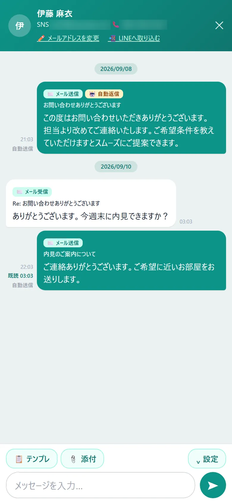

こんな困りごとに
- 反響メールを見ながら、管理表に手で打ち込んでいる
- 返信したかどうかが分からず、返信漏れが起きる
- お客様とのやり取りが、担当者のメールボックスに散らばっている
この機能でできること
- Gmailと連携して、届いた反響をすぐに反響管理表へ取り込み
- 氏名・電話・メール・物件名・賃料・間取り・物件ページのURLなどを読み取ってメモに整理
- 返信はチャット形式。対応が必要な反響は「未対応タスク」にまとまり、お客様からの返信にまだ返していない行は左端に赤い線が付く
メニューの場所左メニュー「各種設定 › メール自動取込」（取り込んだ反響は「営業分析 › 反響管理表」）
使い方（3ステップ）
-
1
Gmailとつなぐ
左メニュー「各種設定 › メール自動取込」で「Googleで連携する」を押し、画面の案内に従ってGoogleアカウントを許可します。16桁のアプリパスワードでつなぐ方法も選べます。
-
2
自動取込をオンにする
「自動取り込みを有効にする」をオンにして保存します。「ポータル登録」で差出人のアドレスと媒体名（例：@suumo.jp → SUUMO）を登録しておくと、媒体ごとに確実に振り分けられます。
-
3
反響管理表から返信する
取り込まれた反響は反響管理表に入り、対応が必要なものは上の「未対応タスク」にまとまります。各行の「✉️メール」を押すと、チャットのような画面でお客様とやり取りできます。お客様がメールを開くと「既読」が付きます。

よくある質問
取り込まれないメールがあるときは？
「メール取込診断」で、取り込まれなかった理由を1通ずつ確認できます。通知として除外される件名のメールは、「追加の判定キーワード」に件名を登録すると取り込めます。
スマホからも返信できますか？
できます。スマホではLINEのような見た目になり、やり取りが画面の大半を占めて、下の入力欄から返信できます。